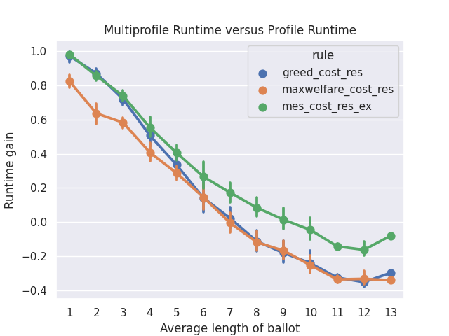
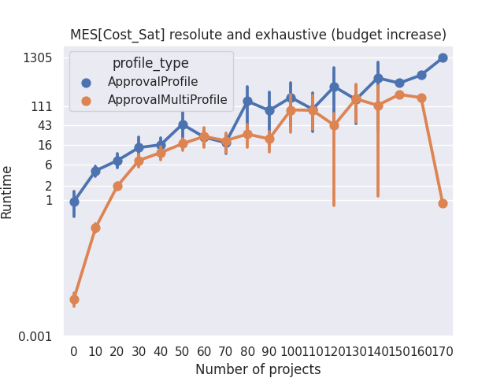

Complete Guide#
This is a more complete guide on how to use Pabutools. For a more basic tutorial, check the Quick Start page.
Instances#
For reference, see the module instance.
A participatory budgeting instance describes all the elements that define the elections. It includes the projects that are being voted on, together with the budget limit.
The main class here is Instance.
This class inherits from the Python class set and behaves as a set of projects,
with additional information. Projects are instantiations of the class
Project, which stores a project’s name and cost
(and potential additional information). Let’s see an example.
from pabutools.election import Instance, Project
instance = Instance() # There are many optional parameters
p1 = Project("p1", 1) # The constructor takes the name and cost of the project
instance.add(p1) # Use the set methods to add/delete projects to an instance
p2 = Project("p2", 1)
instance.add(p2)
p3 = Project("p3", 3)
instance.add(p3)
Importantly, any Python comparison between two projects (equality, etc…) is done based on the name of the projects. Since an instance is a set, adding a project Project(“p”, 1) and another project Project(“p”, 3) will lead to an instance with a single project.
An instance also stores additional information such as the budget limit of the election and additional metadata.
instance.budget_limit = 3 # The budget limit
instance.meta # dict storing metadata on the instance
instance.project_meta # dict of (project, dict) storing metadata on the projects
Several methods can be called on an instance to run through all the budget allocations, test the feasibility of a set of projects, etc…
for b in instance.budget_allocations():
print(str(b) + " is a feasible budget allocation")
instance.is_feasible([p1, p2, p3]) # Returns False
instance.is_exhaustive([p1, p2]) # Returns True
Profiles#
For reference, see the modules ballot and
profile.
A profile is the second basic component of a participatory budgeting election; it stores the ballots of the voters.
We provide one general class Profile
that inherits from the Python class list and is inherited from by all specific
profile types. It is really meant to be an abstract class and should not be used
for any other purpose than inheritance. Similarly, we provide a class
Ballot that will be inherited by specific
ballot formats.
A profile is linked to an instance, which is given as a parameter and then stored in an attribute. It also implements validation of the ballots to ensure consistency of the ballots in a profile.
from pabutools.election import Instance, Profile, Ballot
instance = Instance()
profile = Profile(instance=instance)
profile.ballot_validation = True # Boolean (de)activating the validation of the ballot type
profile.ballot_type = Ballot # The type used for the ballot validation
b = {1, 2, 3}
profile.validate_ballot(b) # The validator, would raise a TypeError here
Approval Profiles#
When submitting approval ballots, voters submit a set of projects they approve of.
Approval ballots are represented through the class
ApprovalBallot that inherits
both from set and from Ballot.
A profile of approval ballots, i.e., an approval profile, is instantiated from the class
ApprovalProfile. It inherits from
Profile. The type for the ballot
validator is by default set to
ApprovalBallot.
from pabutools.election import Project, ApprovalBallot, ApprovalProfile
p = [Project("p{}".format(i), 1) for i in range(10)]
b1 = ApprovalBallot(p[:3]) # Approval ballot containing the first 3 projects
b1.add(p[4]) # Add project to approval ballot
b2 = ApprovalBallot(p[1:5])
profile = ApprovalProfile([b1, b2])
b3 = ApprovalBallot({p[0], p[8]})
profile.append(b3)
b1 in profile # Tests membership, returns True here
Several additional methods are provided in the ApprovalProfile class.
profile.approval_score(p1) # The approval score of a project, i.e., the number of approvers
profile.is_party_list() # Boolean indicating if the profile is party_list
Cardinal Profiles#
When asked for cardinal ballots, voters are asked to associate each project with a score.
Cardinal ballots are represented using the class
CardinalBallot.
It inherits directly from the Python dict class and our
Ballot class.
A profile of cardinal ballots, i.e., a cardinal profile, is instantiated through the
CardinalProfile class.
It inherits from the Profile class and validates ballot types using
CardinalBallot.
from pabutools.election import Project, CardinalBallot, CardinalProfile
p = [Project("p{}".format(i), 1) for i in range(10)]
b1 = CardinalBallot({p[1]: 5, p[2]: 0}) # Cardinal ballot scoring 5 for p1 and 0 for p2
b1.append(p[1]) # The ballot becomes p0 > p4 > p2 > p1
profile = CardinalProfile()
profile.append(b1)
Cumulative Profiles#
Cumulative ballots correspond to a specific type of cardinal ballots where the voters are
allocated a specific number of points that they can distribute among the projects.
The class CumulativeBallot
is used to deal with cumulative ballots. It inherits from
CardinalBallot and thus also from
the Python class dict.
As before, a profile of cumulative ballots is defined in the class
CumulativeProfile
that inherits from the Profile class
(and acts thus as a list).
Ordinal Profiles#
When ordinal ballots are used, voters are asked to order the projects based on their
preferences. The class OrdinalBallot
represents such ballots. It inherits from the Python class list and our class
Ballot.
Ordinal profiles are handled by the class
OrdinalProfile.
from pabutools.election import Project, OrdinalBallot, OrdinalProfile
p = [Project("p{}".format(i), 1) for i in range(10)]
b1 = OrdinalBallot((p[0], p[4], p[2])) # Ordinal ballot ranking p0 > p4 > p2
b1.append(p[1]) # The ballot becomes p0 > p4 > p2 > p1
profile = OrdinalProfile()
profile.append(b1)
Multiprofile#
For reference, see the modules profile.
In some cases, it is faster to use multisets instead of lists for the profiles. We have implemented this through multiprofiles. A multiprofile is a collection of ballots in which each ballot is stored once, together with its multiplicity. Importantly, we always our implementations always allow for profiles and multiprofiles to be used interchangeably.
Multiprofiles are defined through the class
MultiProfile that inherits from the Python
class Counter. Each specific type of profile has its multiprofile counterpart:
ApprovalMultiProfile,
CardinalMultiProfile,
CumulativeMultiProfile,
and OrdinalMultiProfile.
Since ballots are used as dictionary keys in a multiprofile, they need not be mutable.
We have thus implemented the class FrozenBallot
which corresponds to the non-mutable correspondence to a ballot. All specific ballot types
have their frozen counterparts:
FrozenApprovalBallot,
FrozenCardinalBallot,
FrozenCumulativeBallot,
and FrozenOrdinalBallot.
Ballots can easily be frozen:
from pabutools.election import Project, ApprovalBallot, FrozenApprovalBallot
app_ballot = ApprovalBallot({Project("p1", 1), Project("p2", 2)})
# Freezing a ballot using the frozen method of a ballot
frozen_ballot = app_ballot.frozen()
# Freezing a ballot using the frozen ballot constructor
frozen_ballot = FrozenApprovalBallot(app_ballot)
Similarly profiles can easily be turned into multiprofiles:
from pabutools.election import Project, ApprovalBallot, FrozenApprovalBallot
from pabutools.election import ApprovalProfile, ApprovalMultiProfile
b1 = ApprovalBallot({Project("p1", 1), Project("p2", 2)})
b2 = ApprovalBallot({Project("p1", 1), Project("p3", 2)})
profile = ApprovalProfile([b1, b2])
# Multiprofile from the method of a profile
multiprofile = profile.as_multiprofile()
# Multiprofile using the constructor
frozen_ballot = ApprovalMultiProfile(profile=profile)
What is the gain of multiprofiles, you would ask? Well, we can show that using multiprofile speeds up the computation as long as voters do not approve of more than 7 projects on average.
{kind=link}
For the above plot, we computed the outcome of the rules on the data hosted on pabulib both when using profiles and multiprofiles. We measured the runtime and plotted the following measure:
(multiprofile_runtime - profile_runtime) / max(multiprofile_runtime, profile_runtime)
To get more insights, we also plot the actual runtime for each type of profiles:
{kind=link}
(Note the log scale above)
Preference Libraries#
For reference, see Preference Libraries.
We provide support for standard preference libraries that are widely used.
PaBuLib#
We provide full support for the participatory budgeting data hosted on the
pabulib website. The function
parse_pabulib() can be used to parse a file
formatted according to the pabulib format. It returns the instance
and the profile, using the suitable profile class given the ballot
format in the data.
from pabutools.election import parse_pabulib
instance, profile = parse_pabulib("path_to_the_file")
Pabulib files provide a whole range of metadata, not all of which is relevant to everyone. These metadata are stored in the meta members of the instance and profile classes.
from pabutools.election import parse_pabulib
instance, profile = parse_pabulib("path_to_the_file")
instance.meta # The meta dict is populated with all the metadata described in the file
instance.project_meta # The project_meta dict is populated with the metadata related to the projects
for ballot in profile:
ballot.meta # The meta dict populated with the metadata corresponding to the ballot
There are several metadata that are stored as members of the relevant classes. These, for instance, include all the constraints (when known) the voters faced when submitting their ballots. It includes the minimum length of a ballot or the number of points that have to be distributed for instance.
### For ApprovalProfile, CardinalProfile, CumulativeProfile, and OrdinalProfile
profile.legal_min_length # Imposed minimum length of the ballots in the profile
profile.legal_max_length # Imposed maximum length of the ballots in the profile
### For ApprovalProfile only
profile.legal_min_cost # Imposed minimum total cost of the ballots in the profile
profile.legal_max_cost # Imposed maximum total cost of the ballots in the profile
### For CardinalProfile and CumulativeProfile
profile.legal_min_score # Imposed minimum score assigned to a project for the ballots in the profile
profile.legal_max_score # Imposed maximum score assigned to a project for the ballots in the profile
### For CumulativeProfile only
profile.legal_min_total_score # Imposed minimum total scores for the ballots in the profile
profile.legal_max_total_score # Imposed maximum total scores for the ballots in the profile
PrefLib#
We also support the PrefLib format, providing functions to move save a participatory budgeting election into a PrefLib instance.
from pabutools.election import Instance, ApprovalProfile, CardinalProfile, OrdinalProfile
from pabutools.election import approval_to_preflib, cardinal_to_preflib, ordinal_to_preflib
instance = Instance()
# Approval profiles are mapped to categorical instances for PrefLib
app_profile = ApprovalProfile()
preflib_instance = approval_to_preflib(instance, app_profile)
# Cardinal profiles are mapped to ordinal instances for PrefLib
card_profile = CardinalProfile()
preflib_instance = cardinal_to_preflib(instance, card_profile)
# Ordinal profiles are mapped to ordinal instances for PrefLib
ord_profile = ApprovalProfile()
preflib_instance = ordinal_to_preflib(instance, ord_profile)
Satisfaction Measures#
Many concepts, including celebrated participatory budgeting rules, are not using the ballots directly but rather proxies for the satisfaction of the voters that are deduced from the ballots.
We provide many satisfaction functions and flexible ways to create new ones.
A satisfaction function is a class that inherits from
SatisfactionMeasure,
i.e., a class initialized for a given instance, profile, and ballot and
that implements a sat method used to compute the satisfaction. Since a satisfaction function corresponds to a single ballot,
we also provide a SatisfactionProfile
class. This class inherits from the Python class list and implements a
satisfaction profile. Note that there is also a class
SatisfactionMultiProfile,
implementing satisfaction profiles as multisets.
The typical workflow is thus to gather the ballots in a profile, then convert it into a collection of satisfaction functions, which are finally provided as input to a rule.
from pabutools.election import SatisfactionProfile, SatisfactionMeasure
from pabutools.election import parse_pabulib
instance, profile = parse_pabulib("path_to_the_file")
sat_profile = SatisfactionProfile(instance=instance)
# We define a satisfaction function:
class MySatisfaction(SatisfactionMeasure):
def sat(self, projects):
return 100 if "p1" in projects else len(projects)
# We populate the satisfaction profile
for ballot in profile:
sat_profile.append(MySatisfaction(instance, profile, ballot))
# The satisfaction profile is ready for use
outcome = rule(sat_profile)
Because the above can be tedious, we provide simpler ways to define the satisfaction profile. Several widely used satisfaction functions are also directly provided.
from pabutools.election import SatisfactionProfile, Cardinality_Sat
from pabutools.election import parse_pabulib
instance, profile = parse_pabulib("path_to_the_file")
# If a profile and a sat_class are given to the constructor, the satisfaction profile
# is directly initialized with one instance of the sat_class per ballot in the profile.
sat_profile = SatisfactionProfile(instance=instance, profile=profile, sat_class=Cardinality_Sat)
# The satisfaction profile is ready for use
outcome = rule(sat_profile)
We now present useful tools we provide to define satisfaction functions.
Functional Satisfaction Functions#
We also provide more specific ways of defining satisfaction functions.
The class
FunctionalSatisfaction
corresponds to a satisfaction function that is defined by a function taking as
arguments an instance, a profile, a ballot, and a set of projects. We illustrate
its use by defining the Chamberlin-Courant satisfaction function with approval
(equals to 1 if at least one approved project is selected and
0 otherwise).
from pabutools.election import FunctionalSatisfaction
def cc_sat_func(instance, profile, ballot, projects):
return int(any(p in ballot for p in projects))
class CC_Sat(FunctionalSatisfaction):
def __init__(self, instance, profile, ballot):
super(CC_Sat, self).__init__(instance, profile, ballot, cc_sat_func)
Additive Satisfaction Functions#
Another important set of satisfaction functions are the additive ones,
i.e., the ones for which the satisfaction for a set of projects is
equal to the satisfaction of each individual project. The class
AdditiveSatisfaction
implements them. It inherits from the
SatisfactionMeasure
class, and its constructor takes as a parameter
a function mapping instance, profile, ballot, and project to a score.
We illustrate its use by presenting how to define the cardinality
satisfaction function.
from pabutools.election import AdditiveSatisfaction
def cardinality_sat_func(instance, profile, ballot, project):
return int(project in ballot)
class Cardinality_Sat(AdditiveSatisfaction):
def __init__(self, instance, profile, ballot):
super(Cardinality_Sat, self).__init__(instance, profile, ballot, cardinality_sat_func)
Positional Satisfaction Functions#
Positional satisfaction functions are to be used with ordinal ballots.
When using them, the satisfaction of a voter is a function of the
position of the projects in the ballot of the voter. The class
PositionalSatisfaction
implements them. The constructor takes
as parameters two functions: one mapping ballots and projects to a score,
and a second one aggregating the individual scores for sets of projects.
We illustrate its usage by defining the additive Borda satisfaction
function.
from pabutools.election import PositionalSatisfaction
def borda_sat_func(ballot, project):
if project not in ballot:
return 0
return len(ballot) - ballot.index(project)
class Additive_Borda_Sat(PositionalSatisfaction):
def __init__(self, instance, profile, ballot):
super(Additive_Borda_Sat, self).__init__(instance, profile, ballot, borda_sat_func, sum)
Satisfaction Functions Already Defined#
As we have seen above, several satisfaction functions are already defined in the library and can be imported from pabutools.election. We list them below.
CC_Satimplements the Chamberlin-Courant satisfaction function for approval ballots.Cost_Sqrt_Satdefines the satisfaction as the square root of the total cost of the selected and approved projects.Cost_Log_Satdefines the satisfaction as the log of the total cost of the approved and selected projects.Cardinality_Satdefines the satisfaction as the number of approved and selected projects.Relative_Cardinality_Satdefines the satisfaction as the number of approved and selected projects divided by the size of the ballot.Cost_Satdefines the satisfaction as the total cost of the approved and selected projects.Relative_Cost_Satdefines the satisfaction as the total cost of the approved and selected projects divided by the total cost of the most expensive subset of the ballot.Relative_Cost_Approx_Normaliser_Satresembles the previous but uses the total cost of the ballot as the normalizer.Effort_Satdefines the satisfaction as the total share of a voter.Additive_Cardinal_Satdefines the satisfaction as the sum of the scores of the selected projects, where the scores are taken from the cardinal ballot of the voter.Additive_Borda_Satdefines the satisfaction as the sum of the Borda scores of the selected projects.
Rules#
For reference, see the module rules.
We provide the implementation of the most celebrated rules for participatory budgeting.
Additive Utilitarian Welfare Maximiser#
The first rule we provide is the one that returns the budget allocations maximizing the utilitarian social welfare, when the satisfaction measure is additive.
from pabutools.election import Instance, Project, ApprovalProfile, ApprovalBallot, Cost_Sat
from pabutools.rules import max_additive_utilitarian_welfare
p = [Project("p" + str(i), 1) for i in range(10)]
instance = Instance(p, budget_limit=5)
profile = ApprovalProfile([
ApprovalBallot(p),
ApprovalBallot(p[:4]),
ApprovalBallot({p[0], p[8]})
])
# By passing a sat_class, the profile is automatically converted to a satisfaction profile
outcome = max_additive_utilitarian_welfare(
instance,
profile,
sat_class=Cost_Sat
)
# Or we can directly pass the satisfaction profile
outcome = max_additive_utilitarian_welfare(
instance,
profile,
sat_profile=profile.as_sat_profile(Cost_Sat)
)
# An initial budget allocation can be given
outcome = max_additive_utilitarian_welfare(
instance,
profile,
sat_profile=profile.as_sat_profile(Cost_Sat),
initial_budget_allocation=[p[1], p[2]]
)
# We can get the irresolute outcome, i.e., a set of tied budget allocations
irresolute_outcome = max_additive_utilitarian_welfare(
instance,
profile,
sat_class=Cost_Sat,
resoluteness=False
)
Greedy Approximation of the Welfare Maximiser#
We have also implemented standard greedy rules. The usage is more or less the same as before though, more functionalities are offered.
from pabutools.election import Instance, Project, ApprovalProfile, ApprovalBallot, Cost_Sat
from pabutools.rules import greedy_utilitarian_welfare
from pabutools.tiebreaking import app_score_tie_breaking
p = [Project("p" + str(i), 1) for i in range(10)]
instance = Instance(p, budget_limit=5)
profile = ApprovalProfile([
ApprovalBallot(p),
ApprovalBallot(p[:4]),
ApprovalBallot({p[0], p[8]})
])
# By passing a sat_class, the profile is automatically converted to a satisfaction profile
outcome = greedy_utilitarian_welfare(
instance,
profile,
sat_class=Cost_Sat
)
# Or we can directly pass the satisfaction profile
outcome = greedy_utilitarian_welfare(
instance,
profile,
sat_profile=profile.as_sat_profile(Cost_Sat)
)
# If the satisfaction is known to be additive, we can say so to speed up computations
# This is highly recommended
outcome = greedy_utilitarian_welfare(
instance,
profile,
sat_profile=profile.as_sat_profile(Cost_Sat),
is_sat_additive=True
)
# An initial budget allocation can be given
outcome = greedy_utilitarian_welfare(
instance,
profile,
sat_profile=profile.as_sat_profile(Cost_Sat),
initial_budget_allocation=[p[1], p[2]]
)
# The tie-breaking rule can be decided
outcome = greedy_utilitarian_welfare(
instance,
profile,
sat_profile=profile.as_sat_profile(Cost_Sat),
tie_breaking=app_score_tie_breaking
)
# We can get the irresolute outcome, i.e., a set of tied budget allocations
irresolute_outcome = greedy_utilitarian_welfare(
instance,
profile,
sat_class=Cost_Sat,
resoluteness=False
)
Sequential Phragmèn’s Rule#
The sequential Phragmén’s rule has also been implemented. It behaves like other rules, though it does not rely on a satisfaction measure.
from pabutools.election import Instance, Project, ApprovalProfile, ApprovalBallot, Cost_Sat
from pabutools.rules import sequential_phragmen
from pabutools.tiebreaking import app_score_tie_breaking
p = [Project("p" + str(i), 1) for i in range(10)]
instance = Instance(p, budget_limit=5)
profile = ApprovalProfile([
ApprovalBallot(p),
ApprovalBallot(p[:4]),
ApprovalBallot({p[0], p[8]})
])
# By passing a sat_class, the profile is automatically converted to a satisfaction profile
outcome = sequential_phragmen(
instance,
profile
)
# An initial budget allocation can be given
outcome = sequential_phragmen(
instance,
profile,
initial_budget_allocation=[p[1], p[2]]
)
# The tie-breaking rule can be decided
outcome = sequential_phragmen(
instance,
profile,
tie_breaking=app_score_tie_breaking
)
# We can get the irresolute outcome, i.e., a set of tied budget allocations
irresolute_outcome = sequential_phragmen(
instance,
profile,
resoluteness=False
)
Exhaustion Methods#
Since not all rules we have introduced return exhaustive budget allocations, we also provide standard methods to render their outcome exhaustive.
The first method is to apply a sequence of rules until reaching an exhaustive budget allocation.
from pabutools.election import Instance, Project, ApprovalProfile, ApprovalBallot
from pabutools.election import Cost_Sat, Cardinality_Sat
from pabutools.rules import greedy_utilitarian_welfare, method_of_equal_shares
from pabutools.rules import completion_by_rule_combination
p = [Project("p" + str(i), 1) for i in range(10)]
instance = Instance(p, budget_limit=5)
profile = ApprovalProfile([
ApprovalBallot(p),
ApprovalBallot(p[:4]),
ApprovalBallot({p[0], p[8]})
])
# Here we apply two rules: first MES with the cost satisfaction,
# and then the greedy rule with the cardinality satisfaction
budget_allocation_mes_iterated = completion_by_rule_combination(
instance,
profile,
[method_of_equal_shares, greedy_utilitarian_welfare],
[{"sat_class": Cost_Sat}, {"sat_class": Cardinality_Sat}],
)
The second method consists of increasing the budget limit of the instance, in the hope that the rule would then return a budget allocation that is exhaustive for the original instance. If at any point the rule returns a budget allocation that is not feasible for the original budget limit, then the previously returned budget allocation is returned.
from pabutools.election import Instance, Project, ApprovalProfile, ApprovalBallot, Cost_Sat
from pabutools.rules import method_of_equal_shares, exhaustion_by_budget_increase
from pabutools.fractions import frac
p = [Project("p" + str(i), 1) for i in range(10)]
instance = Instance(p, budget_limit=5)
profile = ApprovalProfile([
ApprovalBallot(p),
ApprovalBallot(p[:4]),
ApprovalBallot({p[0], p[8]})
])
# Here we apply the MES rule with cost satisfaction until finding a suitable outcome
budget_allocation_mes_iterated = exhaustion_by_budget_increase(
instance,
profile,
method_of_equal_shares,
{"sat_class": Cost_Sat},
budget_step=frac(1, 24),
)
Note that since these two functions behave as rules, they can be combined. For instance, one can first run MES with an increasing budget, and then complete the outcome with the greedy method (which only does something if the outcome is not already exhaustive).
completion_by_rule_combination(
instance,
profile,
[exhaustion_by_budget_increase, greedy_utilitarian_welfare],
[
{
"rule": method_of_equal_shares,
"rule_params": {"sat_class": Cost_Sat},
},
{"sat_class": Cost_Sat},
],
)
Rule Composition#
We also provide standard ways to compose rules, such as selecting the outcome that is preferred by the largest number of voters for a given satisfaction measure.
from pabutools.election import Instance, Project, ApprovalProfile, ApprovalBallot
from pabutools.election import Cost_Sat, Cardinality_Sat
from pabutools.rules import greedy_utilitarian_welfare, method_of_equal_shares
from pabutools.rules import popularity_comparison
p = [Project("p" + str(i), 1) for i in range(10)]
instance = Instance(p, budget_limit=5)
profile = ApprovalProfile([
ApprovalBallot(p),
ApprovalBallot(p[:4]),
ApprovalBallot({p[0], p[8]})
])
# Here we apply two rules: MES and greedy with the cost satisfaction,
# and return the most preferred outcome based on Cardinality_Sat
outcome = popularity_comparison(
instance,
profile,
Cardinality_Sat,
[method_of_equal_shares, greedy_utilitarian_welfare],
[{"sat_class": Cost_Sat}, {"sat_class": Cost_Sat}],
)
To run the rule as it was implemented in Wieliczka and Świece, for instance, one would run the following:
from pabutools.election import Instance, Project, ApprovalProfile, ApprovalBallot
from pabutools.election import Cost_Sat, Cardinality_Sat
from pabutools.rules import greedy_utilitarian_welfare, method_of_equal_shares
from pabutools.rules import exhaustion_by_budget_increase, popularity_comparison
p = [Project("p" + str(i), 1) for i in range(10)]
instance = Instance(p, budget_limit=5)
profile = ApprovalProfile([
ApprovalBallot(p),
ApprovalBallot(p[:4]),
ApprovalBallot({p[0], p[8]})
])
# First define MES iterated and completed (to simplify)
def mes_full(instance, profile, initial_budget_allocation=None):
return completion_by_rule_combination(
instance,
profile,
[exhaustion_by_budget_increase, greedy_utilitarian_welfare],
[
{
"rule": method_of_equal_shares,
"rule_params": {"sat_class": Cost_Sat},
},
{"sat_class": Cost_Sat},
],
)
# Then run a popularity comparison between MES in full and Greedy Cardinality
popularity_comparison(
instance,
profile,
Cardinality_Sat,
[mes_full, greedy_utilitarian_welfare],
[{}, {"sat_class": Cardinality_Sat}]
)
We also provide a similar comparison using utilitarian social welfare through the function
social_welfare_comparison().
Tie-Breaking#
For reference, see the module tiebreaking.
We provide several ways to break ties between several projects. All tie-breaking rules are
instantiations of the pabutools.tiebreaking.TieBreakingRule class.
This class defines two functions untie and order that respectively return a single project
from a set of several or order a list of projects.
We profile several tie-breaking rules.
from pabutools.election import Project, Instance, ApprovalProfile, ApprovalBallot
from pabutools.tiebreaking import max_cost_tie_breaking, min_cost_tie_breaking
from pabutools.tiebreaking import app_score_tie_breaking, lexico_tie_breaking
p = [Project("p0", 1), Project("p1", 2), Project("p2", 1)]
instance = Instance(p, budget_limit=2)
profile = ApprovalProfile([
ApprovalBallot(p),
ApprovalBallot(p[1:]),
ApprovalBallot({p[1]})
])
min_cost_tie_breaking.untie(instance, profile, [p[0], p[1]]) # Returns p0
max_cost_tie_breaking.untie(instance, profile, [p[0], p[1]]) # Returns p1
app_score_tie_breaking.untie(instance, profile, p) # Returns p1
app_score_tie_breaking.order(instance, profile, p) # Returns [p1, p2, p0]
lexico_tie_breaking.order(instance, profile, p) # Returns [p0, p1, p2]
These are mainly used as arguments for the rules, as seen above.
Fractions#
For reference, see the module fractions.
We provide a customizable way to handle fractions. In general, all fractions should be defined
using the frac() function provided in the fractions
module. Not doing so may lead to undesirable behaviors (i.e., errors).
To make a fraction, simply follow this guide:
from pabutools.fractions import frac, str_as_frac
# Define a fraction
fraction = frac(1, 4)
# Define a fraction from an integer
fraction_from_int = frac(2)
# Define a fraction from a float
fraction_from_int = frac(2.6)
# Define a fraction from a string
fraction_from_str = str_as_frac("2.3")
By default, the gmpy2 module is used to handle fractions. To change this, simply change the value of the FRACTION constant.
import pabutools.fractions
# The default value
pabutools.fractions.FRACTION = "gmpy2"
# Change to Python float
pabutools.fractions.FRACTION = "gmpy2"
Changing the FRACTION constant changes the algorithm used to handle fractions.